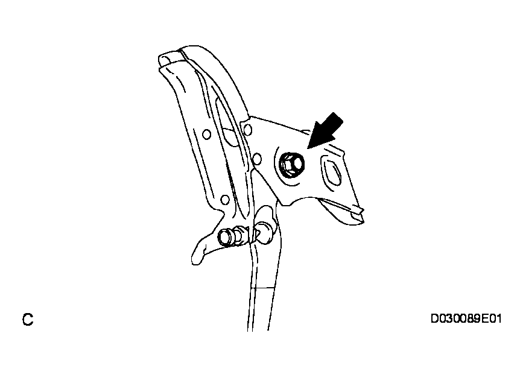
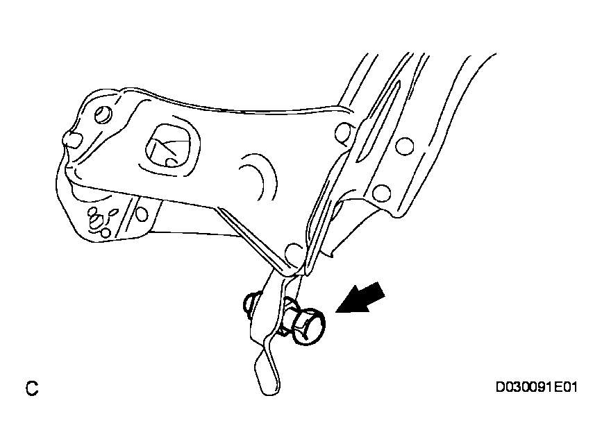
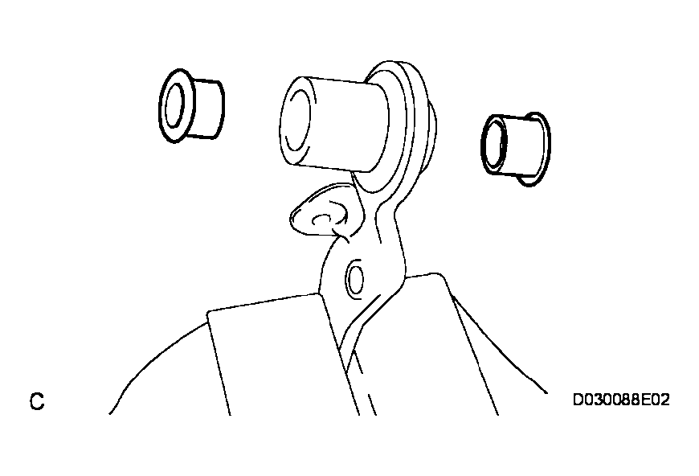
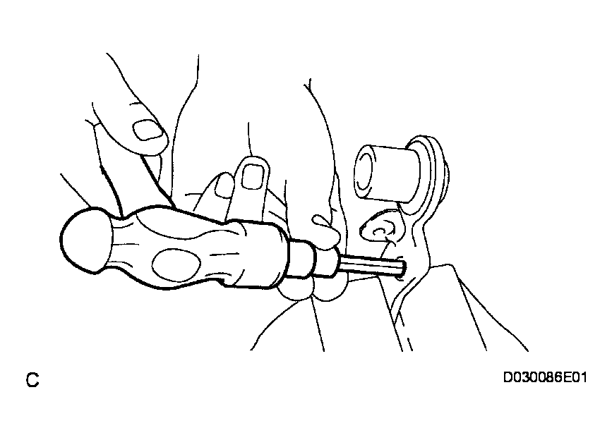

Clutch Pedal: Disassembly
- REMOVE CLUTCH PEDAL SUB-ASSEMBLY
- Remove the bolt and nut.
- Remove the pedal from the clutch pedal support.

Courtesy of © TOYOTA, LICENSE AGREEMENT TMS1002
- REMOVE CLUTCH PEDAL STOPPER BOLT
- Loosen the lock nut and remove the bolt.
- Remove the lock nut from the bolt.
- REMOVE CLUTCH PEDAL PAD

Courtesy of © TOYOTA, LICENSE AGREEMENT TMS1002
- REMOVE CLUTCH PEDAL BUSH
- Remove the 2 bushes from the clutch pedal.

Courtesy of © TOYOTA, LICENSE AGREEMENT TMS1002
- REMOVE CLUTCH MASTER CYLINDER PUSH ROD CLEVIS BUSH
- Using an 8 mm hexagon wrench and hammer, tap out the clevis bush from the clutch pedal.

Courtesy of © TOYOTA, LICENSE AGREEMENT TMS1002